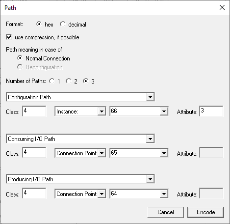

Scope
A General Purpose Discrete I/O Device according to Volume 1 Chapter 6 Device Profiles of the CIP NETWORKS LIBRARY interfaces to multiple discrete I/O device types that do not have network capabilities. Examples include sensors and actuators.
As such the General Purpose Discrete I/O Device supports a variety of objects described in Chapter 5A Object Library, Part A of the CIP NETWORKS LIBRARY.
Currently the example shipped with the SDK supports the following objects:
- Discrete Input Point Object (Class Code: 0x08)
The Discrete Input Point (DIP) Object models discrete inputs in a product. Note that the term "input" is defined from the network's point of view. An input will produce data on the network.
The Discrete Input Point interface is to real input points such as a switch or screw terminal. The input is sampled and the data is stored in this object's Value attribute.
- Discrete Output Point Object (Class Code: 0x09)
A Discrete Output Point (DOP) models discrete outputs in a product. Note that the term "output" is defined from the network's point of view. An output will consume data from the network.
The Discrete Output Point interface is to real output points such as a relay or LED. The output is read from this object's Values attribute and applied to the output terminal, such as a LED.
The ODVA specifications model each individual input and output as separate instances of the Discrete Input Point and the Discrete Output Point Objects. The only required attribute is Attribute 3 Value of BOOL data type. BOOL types are encoded as octets, in compliance with the ODVA specifications. See C-5.2.1 BOOL Encoding in Volume 1.
The profile specific elements of this example are implemented in deviceProfiles\discreteIoDevice\app_discrete_io_device.c with board specific functionality located in appNV.c and below board\am243x-evm\freertos or board\am243x-lp\freertos.
Create General Purpose Discrete I/O Device specific Content
The initialization of the Create General Purpose Discrete I/O Device specific object model is peformed in EI_APP_DISCRETE_IO_DEVICE_init. It sequentially calls more specialized functions that cover the setup of the object structure of the Discrete Output Point Object, the Discrete Input Point Object, and the assemblies for cyclic I/O communication and configuration.
- Note
- The statemachines for Digital Input Points and Digital Output Points as described in 5A-9.6 and 5A-10.5 Behavior in Volume 1 are not within the scope of provided example and need to be implemented seperately.

Initialization of the Discrete Output Point Object

EI_APP_DISCRETE_IO_DEVICE_DOP_init first creates an instance of the Discrete Output Point Object. It then adds the Get_Attribute_Single as Class Service and adds Attribute 1, Revision to the Class Instance. According to Volume 1 Chapter 5A-10.3 Common Services, the Get_Attribute_Single service is required if any Class Attribute is implemented.
::
{
OSAL_error (__func__, __LINE__, OSAL_STACK_INIT_ERROR, true, 0);
goto laError;
}
OSAL_MEMORY_memset(&service, 0, sizeof(service));
errCode = EI_APP_DISCRETE_IO_DEVICE_DOP_addClassAttribute(pCipNode, 1, &dopClassData_s.revision);
::
ETHIP_API uint32_t EI_API_CIP_addClassService(T *pCipNode_p, uint16_t classId_p, EI_API_CIP_SService_t *pService_p)
Add service/s to the class.
Definition EI_API_CIP_stub.c:283
ETHIP_API uint32_t EI_API_CIP_createClass(T *pCipNode_p, uint16_t classId_p)
Create a CIP class.
Definition EI_API_CIP_stub.c:209
@ EI_API_CIP_eSC_GETATTRSINGLE
Definition EI_API_def.h:104
@ EI_API_CIP_eERR_OK
Definition EI_API_CIP_define.h:30
Class attributes of the Discrete Output Point Object
| Attribute ID | Name | Data Type | Value |
| 1 | Revision | UINT | 1 |
After the Class is set up, Instances are created for each Digital Output Point. For each Instance Get_Attribute_Single and Set_Attribute_Single services are registered. Finally, the required Attribute 3, Value of type BOOL is added to each Instance and callback functions for the get and set services are registered. The default value for each Digital Output Point is set to 0.
::
for (
int i = 1; ((
EI_API_CIP_eERR_OK == errCode) && (i <= EI_APP_DISCRETE_IO_DOP_NUM_OF_INST)); i++)
{
ei_api_cip_edt_bool instanceValue = 0;
errCode = EI_APP_DISCRETE_IO_DEVICE_DOP_addInstanceAttribute(
pCipNode,
i,
EI_APP_DISCRETE_IO_DEVICE_DOP_ATTRIBUTE_3,
EI_APP_DISCRETE_IO_DEVICE_DOP_getValueCb,
EI_APP_DISCRETE_IO_DEVICE_DOP_setValueCb,
sizeof(ei_api_cip_edt_bool),
&instanceValue);
}
::
@ EI_API_CIP_eSC_SETATTRSINGLE
Definition EI_API_def.h:105
@ EI_API_CIP_eAR_GET_AND_SET
Definition EI_API_def.h:119
@ EI_API_CIP_eEDT_BOOL
Definition EI_API_CIP_define.h:96
ETHIP_API uint32_t EI_API_CIP_addInstanceService(T *pCipNode_p, uint16_t classId_p, uint16_t instanceId_p, EI_API_CIP_SService_t *pService_p)
Add one or more service/s to the class instance.
Definition EI_API_CIP_stub.c:850
ETHIP_API uint32_t EI_API_CIP_createInstance(T *pCipNode_p, uint16_t classId_p, uint16_t instanceId_p)
Creates a CIP instance.
Definition EI_API_CIP_stub.c:753
Instance attributes of the Discrete Output Point (Instances 1 to EI_APP_DISCRETE_IO_DOP_NUM_OF_INST)
| Attribute ID | Name | Data Type | Value |
| 3 | Value | BOOL | 0 |
In the set callback functions output point are linked to the industrial LED array that is available on the supported evaluation boards.
uint32_t EI_APP_DISCRETE_IO_DEVICE_DOP_setValueCb(EI_API_CIP_NODE_T* pCipNode, uint16_t classId, uint16_t instanceId, uint16_t attrId, uint16_t len, void* pvValue)
{
len = sizeof(uint8_t);
uint8_t value = *(uint8_t*)pvValue;
if (sizeof(value) != len)
{
goto laError;
}
else
{
goto laError;
}
laError:
return error;
}
@ EI_API_eERR_CB_TOO_MUCH_DATA
Definition EI_API_def.h:136
@ EI_API_eERR_CB_NOT_ENOUGH_DATA
Definition EI_API_def.h:135
@ EI_API_eERR_CB_INVALID_VALUE
Definition EI_API_def.h:134
@ EI_API_CIP_eERR_GENERAL
Definition EI_API_CIP_define.h:33
uint32_t EI_APP_DISCRETE_IO_DEVICE_DOP_setValue(EI_API_CIP_NODE_T* pCipNode, uint16_t instanceId, uint8_t value)
{
uint8_t instanceIndex = instanceId - 1;
if (EI_APP_DISCRETE_IO_DEV_LED_ON == value)
{
EI_APP_DISCRETE_IO_DEVICE_ledStatus_s |= EI_APP_DISCRETE_IO_DEV_LED_ON << (instanceIndex);
CUST_DRIVERS_LED_setIndustrialLeds(EI_APP_DISCRETE_IO_DEVICE_ledStatus_s);
}
else
{
EI_APP_DISCRETE_IO_DEVICE_ledStatus_s &= ~(EI_APP_DISCRETE_IO_DEV_LED_ON << (instanceIndex));
CUST_DRIVERS_LED_setIndustrialLeds(EI_APP_DISCRETE_IO_DEVICE_ledStatus_s);
}
error =
EI_API_CIP_setAttr_bool(pCipNode, EI_APP_DISCRETE_IO_DEVICE_DOP_CLASS_ID, instanceId, EI_APP_CIP_INSTANCE_ATTRIBUTE_ID_03, value);
return error;
}
ETHIP_API uint32_t EI_API_CIP_setAttr_bool(T *pCipNode_p, uint16_t classId_p, uint16_t instanceId_p, uint16_t attrId_p, ei_api_cip_edt_bool value_p)
Set attribute of type BOOL.
Definition EI_API_CIP_stub.c:2821
Initialization of the Discrete Input Point Object

EI_APP_DISCRETE_IO_DEVICE_DIP_init first creates an instance of the Discrete Input Point Object. It adds the Get_Attribute_Single as Class Service and Attribute 1, Revision to the Class Instance. The value of the Revision Attribute is 2.
::
{
OSAL_error (__func__, __LINE__, OSAL_STACK_INIT_ERROR, true, 0);
goto laError;
}
OSAL_MEMORY_memset(&service, 0, sizeof(service));
errCode = EI_APP_DISCRETE_IO_DEVICE_DIP_addClassAttribute(pCipNode, 1, &dipClassData_s.revision);
::
Class attributes of the Discrete Input Point Object
| Attribute ID | Name | Data Type | Value |
| 1 | Revision | UINT | 2 |
Within the Class, Instances are created for each Digital Input Point. For all instances the Get_Attribute_Single and service is registered. Finally the required Attribute 3, Value of type BOOL is added to each Instance and a callback function for the get service is registered.
::
for (
int i = 1; ((
EI_API_CIP_eERR_OK == errCode) && (i <= EI_APP_DISCRETE_IO_DIP_NUM_OF_INST)); i++)
{
ei_api_cip_edt_bool instanceValue = 0;
errCode = EI_APP_DISCRETE_IO_DEVICE_DIP_addInstanceAttribute(pCipNode,
i,
EI_APP_DISCRETE_IO_DEVICE_DIP_ATTRIBUTE_3,
EI_APP_DISCRETE_IO_DEVICE_DIP_getValueCb,
NULL,
sizeof(ei_api_cip_edt_bool),
&instanceValue);
}
::
@ EI_API_CIP_eAR_GET
Attribute is gettable.
Definition EI_API_def.h:118
Instance attributes of the Discrete Input Point (Instances 1 to EI_APP_DISCRETE_IO_DIP_NUM_OF_INST)
| Attribute ID | Name | Data Type | Value |
| 3 | Value | BOOL | |
The callback function itself simply retrieves the value from the attribute as there is no specific hardware input functionality available on the supported evaluation boards. This code requires modification to user hardware if corresponding functionality is available on the hardware.
uint32_t EI_APP_DISCRETE_IO_DEVICE_DIP_getValueCb(EI_API_CIP_NODE_T* pCipNode, uint16_t classId, uint16_t instanceId, uint16_t attrId, uint16_t* pLen, void* pvValue)
{
*pLen = sizeof(bool);
*(bool*)pvValue = EI_APP_DISCRETE_IO_DEVICE_DIP_getValue(pCipNode, instanceId);
}
@ EI_API_eERR_CB_NO_ERROR
Definition EI_API_def.h:131
bool EI_APP_DISCRETE_IO_DEVICE_DIP_getValue(EI_API_CIP_NODE_T* pCipNode, uint8_t instanceId)
{
uint8_t value = 0;
if(EI_APP_DISCRETE_IO_DIP_NUM_OF_INST < instanceId)
{
}
else
{
EI_API_CIP_getAttr_bool(pCipNode, EI_APP_DISCRETE_IO_DEVICE_DIP_CLASS_ID, instanceId, EI_APP_DISCRETE_IO_DEVICE_DOP_ATTRIBUTE_3, &value);
}
return value;
}
ETHIP_API uint32_t EI_API_CIP_getAttr_bool(T *pCipNode_p, uint16_t classId_p, uint16_t instanceId_p, uint16_t attrId_p, ei_api_cip_edt_bool *pValue_p)
Get attribute of type BOOL.
Definition EI_API_CIP_stub.c:1478
Create and Populate the Device Assemblies
The Discrete I/O Point example currently differs from the specifications in Chapter 6-10 of Volume 1 in that it uses vendor-spefic implementations of Consuming and Producing Assemblies, as well as a vendor-specific example of a Configuration Assembly. The corresponding code is implemented in the function EI_APP_DISCRETE_IO_DEVICE_cipSetup in deviceProfiles\discreteIoDevice\app_discrete_io_device.c.

- Note
- In the diagram above not all parameters required by the API functions are indicated. Please review the example source code for full details.
Assebly Instances implemented in the General Purpose Discrete I/O Device Example
| Instance ID | Description |
| 0x64 | Producing Assembly (Input Data) |
| 0x65 | Consuming Assembly (Output Data) |
| 0x66 | Configuration Assembly |
| 0xFE | Input Only |
| 0xFF | Listen-only |
Finally add Attributes to the assemblies created earlier. Digital Input Points are added to the Producing Assembly and Digital Output Points are added to the Consuming Assembly and the Configuration Assembly.
::
for(uint8_t instanceId = 1; instanceId <= EI_APP_DISCRETE_IO_DIP_NUM_OF_INST; instanceId++)
{
errCode =
EI_API_CIP_addAssemblyMember(pCipNode, EI_APP_DISCRETE_IO_DEVICE_ASSEMBLY_PRODUCING, EI_APP_DISCRETE_IO_DEVICE_DIP_CLASS_ID, instanceId, EI_APP_DISCRETE_IO_DEVICE_DIP_ATTRIBUTE_3);
{
OSAL_printf("Failed to add Class ID %#x, Instance ID %#x, Attribute ID %#x to Assembly Instance 0x64: Error code: 0x%08x\r\n", EI_APP_DISCRETE_IO_DEVICE_DIP_CLASS_ID, instanceId, EI_APP_DISCRETE_IO_DEVICE_DIP_ATTRIBUTE_3, errCode);
}
}
::
ETHIP_API uint32_t EI_API_CIP_addAssemblyMember(T *pCipNode_p, uint16_t assemblyInstanceId_p, uint16_t classId_p, uint16_t instanceId_p, uint16_t attributeId_p)
Add an member to an assembly member list.
Definition EI_API_CIP_stub.c:4245
::
for(uint8_t instanceId = 1; instanceId <= EI_APP_DISCRETE_IO_DOP_NUM_OF_INST; instanceId++)
{
errCode =
EI_API_CIP_addAssemblyMember(pCipNode, EI_APP_DISCRETE_IO_DEVICE_ASSEMBLY_CONSUMING, EI_APP_DISCRETE_IO_DEVICE_DOP_CLASS_ID, instanceId, EI_APP_DISCRETE_IO_DEVICE_DOP_ATTRIBUTE_3);
{
OSAL_printf("Failed to add Class ID %#x, Instance ID %#x, Attribute ID %#x to Assembly Instance 0x65: Error code: 0x%08x\r\n", EI_APP_DISCRETE_IO_DEVICE_DOP_CLASS_ID, instanceId, EI_APP_DISCRETE_IO_DEVICE_DOP_ATTRIBUTE_3, errCode);
}
errCode =
EI_API_CIP_addAssemblyMember(pCipNode, EI_APP_DISCRETE_IO_DEVICE_ASSEMBLY_CONFIGURATION, EI_APP_DISCRETE_IO_DEVICE_DOP_CLASS_ID, instanceId, EI_APP_DISCRETE_IO_DEVICE_DOP_ATTRIBUTE_3);
{
OSAL_printf("Failed to add Class ID %#x, Instance ID %#x, Attribute ID %#x to Assembly Instance 0x66: Error code: 0x%08x\r\n", EI_APP_DISCRETE_IO_DEVICE_DOP_CLASS_ID, instanceId, EI_APP_DISCRETE_IO_DEVICE_DOP_ATTRIBUTE_3, errCode);
}
}
::
In the EDS files this is reflected by the following Connection Manager section (example for the exclusive owner connection):
::
[Connection Manager]
Object_Name = "Connection Manager Object";
Object_Class_Code = 0x06;
Connection1 =
0x04010002, $ trigger & transport
$ 0-15 = supported transport classes (class 1)
$ 16 = cyclic (1 = supported)
$ 17 = change of state (0 = not supported)
$ 18 = on demand (0 = not supported)
$ 19-23 = reserved (must be zero)
$ 24-27 = exclusive owner
$ 28-30 = reserved (must be zero)
$ 31 = client 0 (don't care for classes 0 and 1)
0x44640005, $ point/multicast & priority & realtime format
$ 0 = O=>T fixed (1 = supported)
$ 1 = O=>T variable (0 = not supported)
$ 2 = T=>O fixed (1 = supported)
$ 3 = T=>O variable (0 = not supported)
$ 4-7 = reserved (must be zero)
$ 8-10 = O=>T header (4 byte run/idle)
$ 11 = reserved (must be zero)
$ 12-14 = T=>O header
$ 15 = reserved (must be zero)
$ 16-19 = O=>T point-to-point
$ 20-23 = T=>O multicast
$ 24-27 = O=>T scheduled
$ 28-31 = T=>O scheduled
,2,Assem2, $ O=>T RPI,Size,Format
,2,Assem1, $ T=>O RPI,Size,Format
,, $ config part 1 (dynamic assemblies)
2,Assem3, $ config part 2 (module configuration)
"Exclusive Owner", $ connection name
"", $ Help string
"20 04 24 66 2C 65 2C 64"; $ exclusive owner path
::
The corresponding Create/Decode Path dialog in EZ-EDS:

Cyclic Run Function
The cyclic operation of the General Purpose Discrete I/O functionality is valled within EI_APP_DISCRETE_IO_DEVICE_run. Here both EI_APP_DISCRETE_IO_DEVICE_DOP_run and EI_APP_DISCRETE_IO_DEVICE_DIP_run are called. In paticular EI_APP_DISCRETE_IO_DEVICE_DOP_run controlles the industrial LED array on the supported evaluation boards.
static void EI_APP_DISCRETE_IO_DEVICE_DOP_run(EI_API_CIP_NODE_T* pCipNode)
{
uint8_t buffer[EI_APP_DISCRETE_IO_DOP_NUM_OF_INST] = { 0 };
errCode =
EI_API_CIP_getAssemblyData(pCipNode, EI_APP_DISCRETE_IO_DEVICE_ASSEMBLY_CONSUMING, buffer, EI_APP_DISCRETE_IO_DOP_NUM_OF_INST);
for(uint8_t instanceIndex = 0; instanceIndex < EI_APP_DISCRETE_IO_DOP_NUM_OF_INST; instanceIndex++)
{
if(EI_APP_DISCRETE_IO_DEVICE_dopStatus_s[instanceIndex] == EI_APP_DISCRETE_IO_DEVICE_DOP_ENABLED)
{
if (EI_APP_DISCRETE_IO_DEV_LED_OFF == buffer[instanceIndex] &&
EI_API_CIP_eERR_OK == errCode)
{
EI_APP_DISCRETE_IO_DEVICE_ledStatus_s &= ~(EI_APP_DISCRETE_IO_DEV_LED_ON << (instanceIndex));
CUST_DRIVERS_LED_setIndustrialLeds(EI_APP_DISCRETE_IO_DEVICE_ledStatus_s);
}
else if (EI_APP_DISCRETE_IO_DEV_LED_ON == buffer[instanceIndex] &&
EI_API_CIP_eERR_OK == errCode)
{
EI_APP_DISCRETE_IO_DEVICE_ledStatus_s |= (EI_APP_DISCRETE_IO_DEV_LED_ON << (instanceIndex));
CUST_DRIVERS_LED_setIndustrialLeds(EI_APP_DISCRETE_IO_DEVICE_ledStatus_s);
}
}
}
}
ETHIP_API uint32_t EI_API_CIP_getAssemblyData(T *pCipNode_p, uint16_t assemblyInstanceId_p, void *pDestinationBuffer_p, uint16_t destinationBufferLength_p)
Get assembly instance attribute data.
Definition EI_API_CIP_stub.c:4448
EI_APP_DISCRETE_IO_DEVICE_DIP_run retrieves the data from Attribute 3 of the Digital Output Point Object instances and uses their current values to mirror the data back to the Producing Assembly:
static void EI_APP_DISCRETE_IO_DEVICE_DIP_run(EI_API_CIP_NODE_T* pCipNode)
{
uint8_t buffer[EI_APP_DISCRETE_IO_DIP_NUM_OF_INST] = { 0 };
for(uint8_t instanceId = 0; instanceId < EI_APP_DISCRETE_IO_DIP_NUM_OF_INST; instanceId++)
{
EI_API_CIP_getAttr_bool(pCipNode, EI_APP_DISCRETE_IO_DEVICE_DOP_CLASS_ID, instanceId + 1, EI_APP_DISCRETE_IO_DEVICE_DOP_ATTRIBUTE_3, &buffer[instanceId]);
}
}
ETHIP_API uint32_t EI_API_CIP_setAssemblyData(T *pCipNode_p, uint16_t assemblyInstanceId_p, void *pSourceBuffer_p, uint16_t sourceBufferLength_p)
Set assembly instance attribute data.
Definition EI_API_CIP_stub.c:4577


 1.9.7
1.9.7